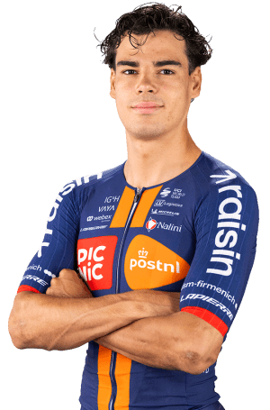

Renard haquin
Datos personales
- Henri François Renard haquin
- 12/12/2002
- Francia
- TEAM PICNIC POSTNL/ned
- N°217

Datos equipos
- Team Picnic PostNL
- Wagner Bazin WB
- CC Étupes
- Team Prodialog-David Derepas
Temporada 2025
| Concepto | Resultado |
|---|---|
| Podios | 7 |
| Carreras disputadas | 45 |
| Victorias de etapa | 1 |
| Mejor puesto en etapa | 9º |
| Mejor puesto general | 12º |
| Equipos disputados | 4 |
Multimedia
Equipo Team Picnic PostNL en la Vuelta Ciclista a España 2026.